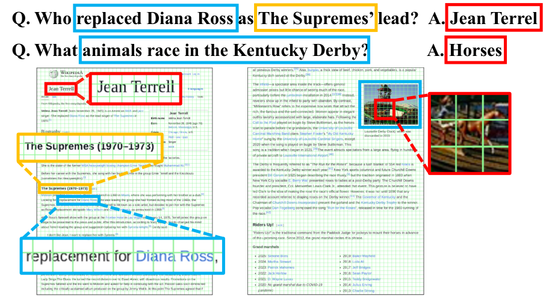
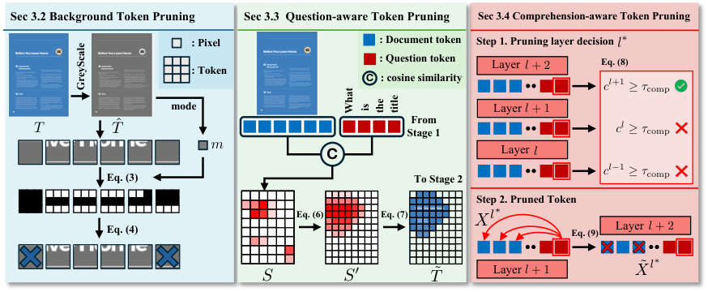
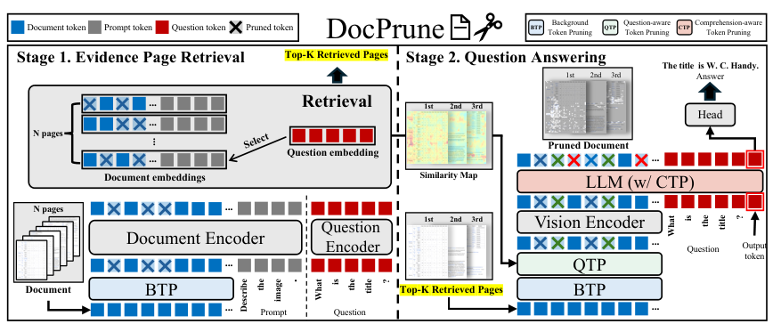
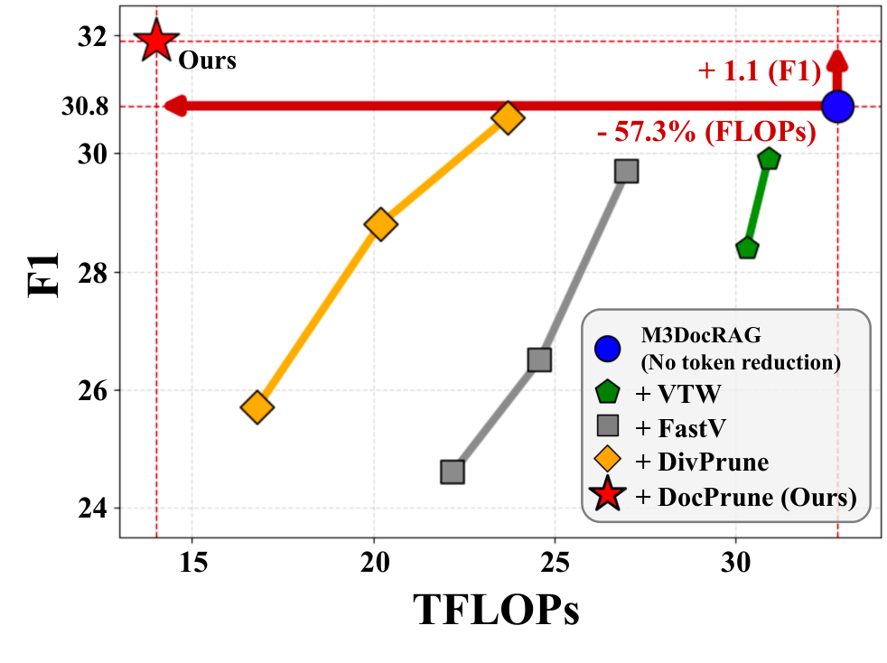
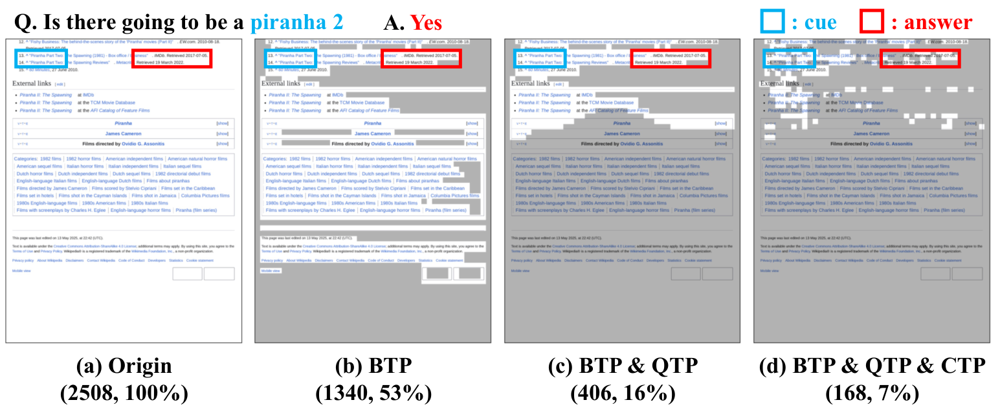

一句话读懂这篇论文
文档中的 token 冗余有三种来源

文档页面通常包含大面积空白背景，而真正支持答案的内容集中在少数局部区域；top 10% 的高注意力 token 已覆盖大部分有效信息。
M3DocRAG 中平均约 36% patch 属于背景区域，仍会进入视觉编码和后续计算。
去除背景后，真正与问题相关的内容仍只占很小部分；保留 top 10% token 时 F1 仅小幅下降。
浅层的注意力还不稳定，过早剪枝会误删证据；不同样本的最佳剪枝层也不同。
核心矛盾不是“能不能剪”，而是“剪什么、何时剪、剪到什么程度”。
DocPrune：从检索到生成的渐进式剪枝

DocPrune 将 token pruning 贯穿检索和问答：先删背景，再用问题筛选，最后在解码阶段依据理解状态剪枝。
Background Token Pruning
按 patch 的背景强度识别空白区域，只保留前景内容。Question-aware Pruning
复用检索阶段的图文 embedding，用平滑后的相似度图去掉问题无关 token。Comprehension-aware Pruning
监测 decoder 最后 token 的 L2 norm，达到理解阈值后再依据 attention 剪枝。先利用文档结构，再利用问题语义
将页面切成 patch，统计灰度背景的主值；背景比例超过阈值的 patch 被删除。它不依赖问题，既用于页面检索，也用于 QA 编码。
计算文档 token 与问题 token 的 cosine similarity，并用 Gaussian smoothing 扩大局部相关区域，保留超过阈值的 token。
QTP 可以复用检索阶段已经计算的 embedding，因此额外开销很小；关键收益来自把“相关性筛选”从整页 token 前移到 QA encoder 之前。
让模型自己决定“什么时候已经理解够了”

不同层的剪枝效果不同；后层 attention 更可靠，而最后 token 的 L2 norm 可以作为样本级理解程度代理。
CTP 在 decoder 每层计算最后 token 隐状态的 L2 norm：当其超过 comprehension threshold，就认为模型已经获得足够上下文，并在该层用 output token 对视觉 token 的 attention 作为重要性分数进行裁剪。
更快，而且不是以准确率为代价

DocPrune 在 F1—计算量曲线中同时取得更高准确率和更低 TFLOPs。
| 设置 | Pages | FLOPs/计算 | EM | F1 |
|---|---|---|---|---|
| Qwen2-VL baseline | 1 | 14.82 / 18.02 | 26.5 | 30.8 |
| + FastV | 1 | 14.82 / 9.84 | 24.3 | 28.6 |
| + DocPrune | 1 | 5.83 / 7.72 | 27.9 | 32.0 |
| + DocPrune | 4 | 16.36 / 25.45 | 33.0 | 37.3 |
在 M3DocRAG 的单页、两页、四页设置中，DocPrune 都能大幅降低 encoder/decoder 计算并提高吞吐；整体摘要中的 3.0×、3.3× 是效率提升的主结论。
剪枝策略必须尊重文档领域和层级状态
仅保留高注意力 token，F1 只下降约 1.2 分，但 FLOPs 降到原来的约 1/9，吞吐提升约 6.46×。
第 15 层之后 attention-guided pruning 才明显优于 random，约第 20 层达到较好效果；CTP 用理解状态避免固定层规则。

定性结果展示了 BTP、QTP、CTP 逐步保留答案相关区域、去除背景和冗余 token 的过程。
对文档 RAG / VLM 系统的启示
检索页、QA encoder 和 decoder 的 token 冗余来源不同，应在不同阶段做不同剪枝。
不要为 QA 再构造一套昂贵的相关性模型，已有的图文 embedding 就能提供 QTP 的基础。
固定剪枝层容易在难样本上误删证据；理解度指标让计算预算随样本难度变化。
DocPrune 的价值不只是“删 token”，而是把文档布局、问题相关性和模型内部状态结合成一条可解释的效率—准确率控制链路。